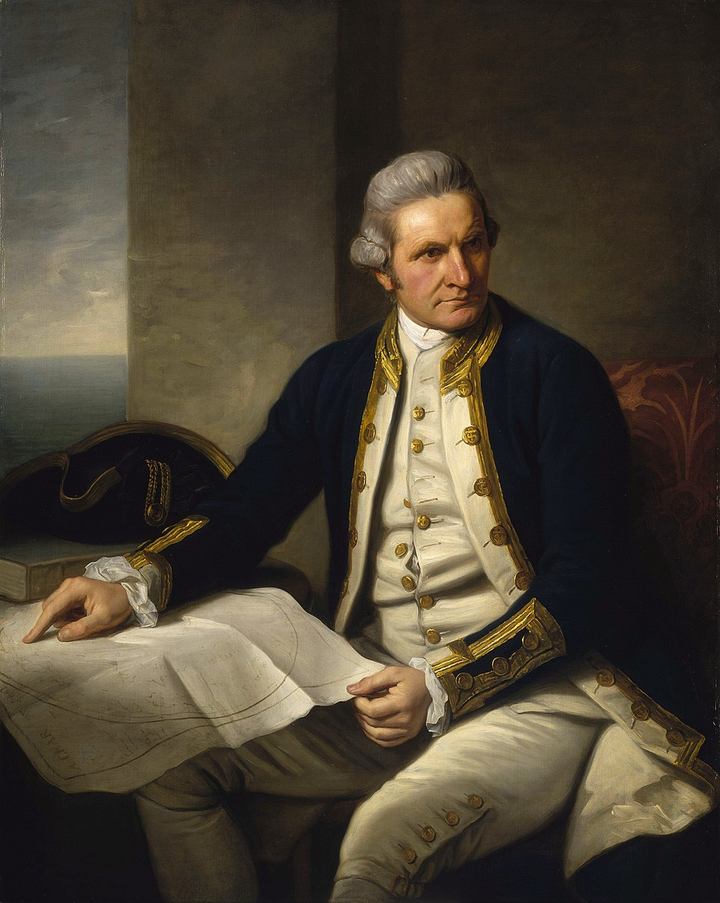
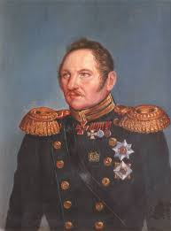
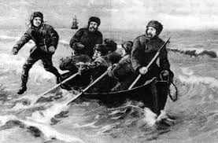
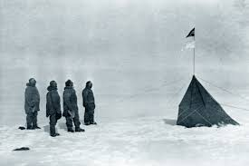

Early Exploration

The quest to discover Antarctica began with early navigators who suspected a vast southern landmass existed. These pioneering voyages faced unimaginable hardships - freezing temperatures, treacherous ice, and months of darkness - as they charted unknown waters at the bottom of the world.
James Cook's Voyages
First to cross Antarctic Circle, circumnavigated Antarctica without sighting land
First Sightings
Possible first continental sightings by Fabian Gottlieb von Bellingshausen, Edward Bransfield, and Nathaniel Palmer
First Landing
Norwegian whalers made first confirmed continental landing
Heroic Age (1897-1922)
The Heroic Age saw nations and individuals competing to conquer Antarctica's last great geographical prizes. These expeditions combined scientific discovery with incredible feats of endurance, often at terrible human cost.
Shackleton (1914-17)
Endurance trapped in ice - miraculous survival story
Amundsen (1911)
First to reach South Pole (Dec 14, 1911)
Scott (1910-13)
Reached Pole second (Jan 17, 1912), perished on return
Modern Scientific Exploration
Today's Antarctic research continues humanity's quest to understand this frozen continent, now focused on scientific discovery rather than geographical conquest. International cooperation has replaced national rivalry in this fragile environment.
International Geophysical Year (1957-58)
12 nations established 50+ research stations, leading to Antarctic Treaty

Scientific Discoveries
Ice cores revealing 800,000 years of climate data, subglacial lakes, extremophile life
Current Research
70+ year-round stations from 30 countries studying climate, astronomy, biology